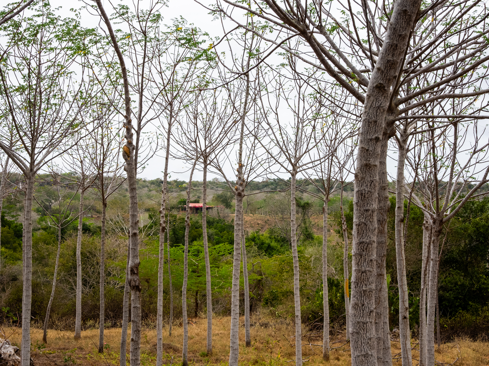
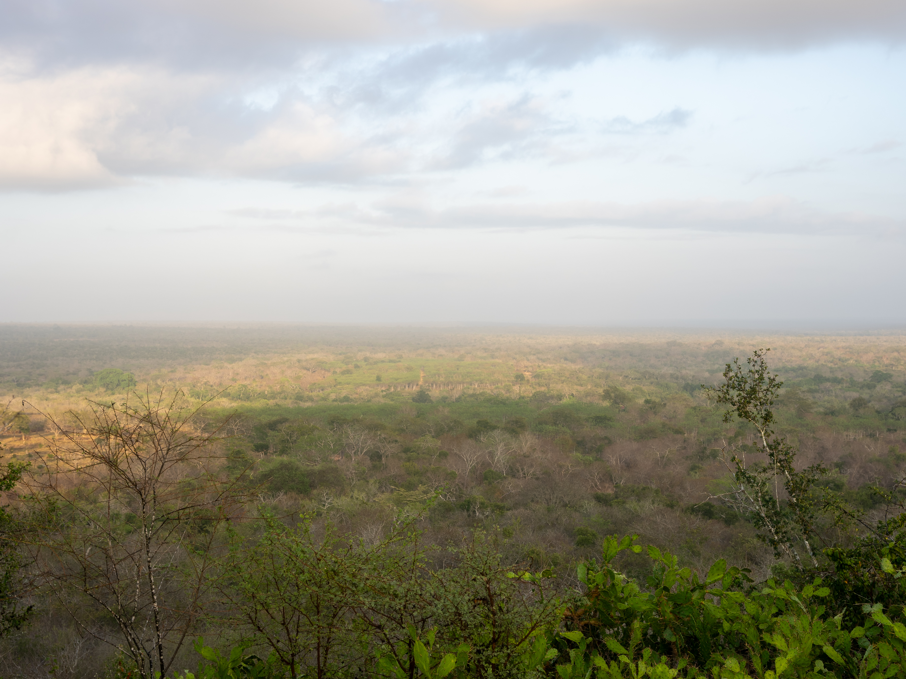
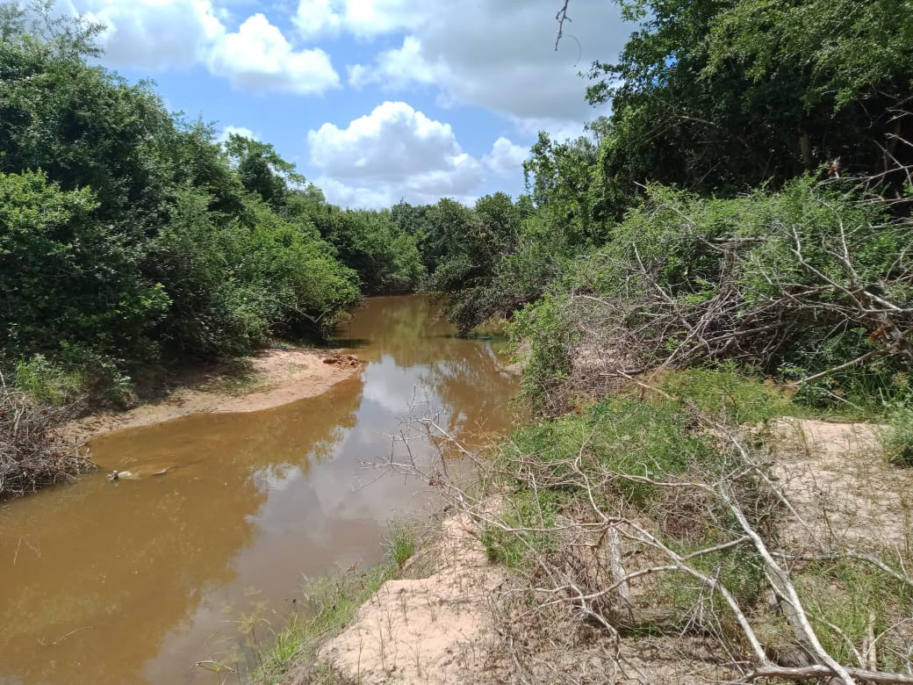
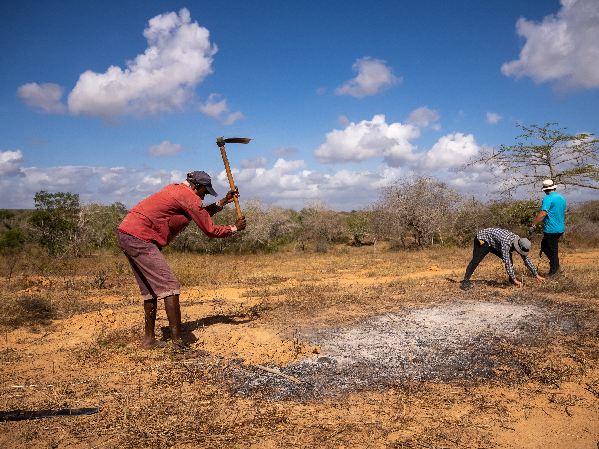
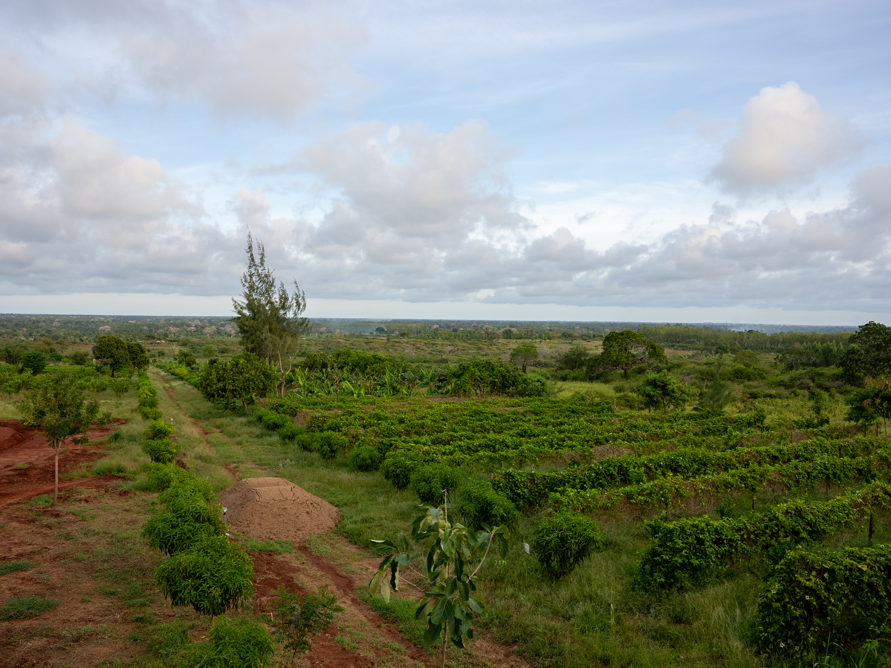
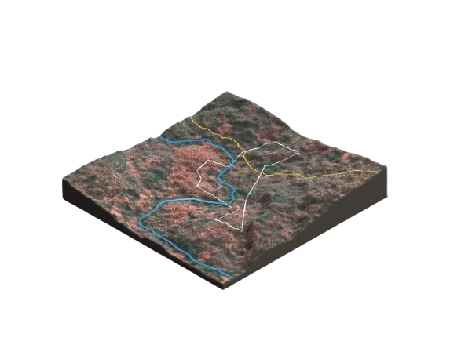

Koromi in Pictures
A living laboratory of dryland forestry, biodiversity and restoration in coastal Kenya.


.jpg)





Our dryland forestry proof of concept — practical evidence that commercially relevant forestry, biodiversity conservation and ecological restoration can be combined under dryland conditions in coastal Kenya.
Capital Africa began developing Koromi Farm in 2019 as a practical response to a central question: can commercially relevant forestry, biodiversity conservation and ecological restoration be combined under dryland conditions?
The site was developed progressively rather than as a showcase plantation. Capital Africa tested species, planting methods, water systems, nursery quality, spacing, pruning, survival and operational management. This learning function is central to Koromi’s value.
A living laboratory of dryland forestry, biodiversity and restoration in coastal Kenya.





Practical lessons that cannot be obtained from feasibility studies alone.
A species that performs well in one dryland environment may fail where soils, rainfall distribution or water access differ.
Higher initial density may improve height growth and stem straightness while creating opportunities for early pole thinnings.
Root structure, hardening, container design, seed source and timing of dispatch materially affect establishment.
Reservoirs, storage, pumping, field distribution, planting season and targeted watering must work together.
Pruning, thinning, protection and replacement cannot be postponed without affecting timber quality and future value.
Productive blocks, natural vegetation, enrichment planting and biodiversity areas can be designed as one landscape.
People, machinery, seed systems, logistics, monitoring and decision-making structures are needed before large planting targets are credible.
Koromi gives Capital Africa practical knowledge that cannot be obtained from feasibility studies alone. It allows the company to test forestry systems, water solutions, species combinations, restoration methods and monitoring approaches before applying them at larger scale.
For investors and partners, Koromi demonstrates that Capital Africa understands the realities of dryland land development: variable rainfall, seedling losses, fire risk, nursery timing, biodiversity trade-offs, maintenance requirements and the need for long-term local management.
